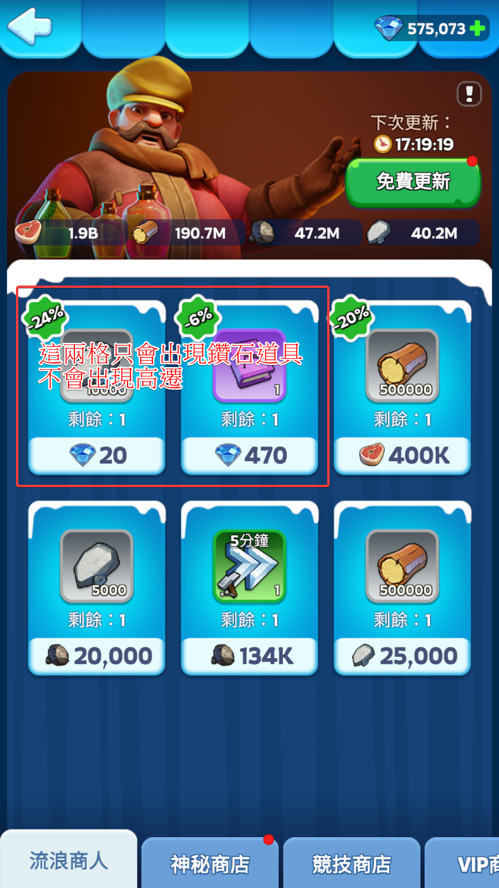
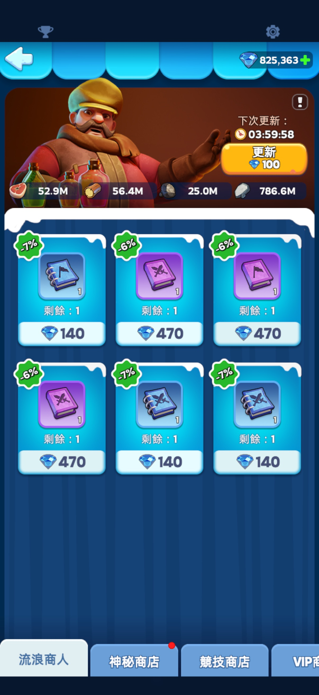

不管是打兵工廠、雪域聯賽（TAL）還是平時打架，高級遷城（簡稱高遷）都是超重要的消耗品。除了聯盟商店以外，流浪商人是最穩定的日常獲取管道。
說起來理所當然，但上次在聯盟頻道聊開以後，才發現不是每個人都清楚怎麼有效利用流浪商人。以下讓我娓娓道來。
能出現高遷的格子
流浪商人頁面一共六格。左上和中上這兩格只會出現鑽石道具，不會出現高遷，不用盯著它們。要刷高遷，只需要盯住另外四格。

三種刷高遷的預算方案
以下提供三種操作模式，根據自己的鑽石儲量選一種即可。
🐳 鯨魚級預算｜每日約數千到一萬鑽
可刷高遷的四格中，以下三種「看到就跳過不買」：
跳過：折扣只有 −7% 的藍書、折扣只有 −6% 的紫書、任意折扣的隨機遷城
除了這三種以外，不管是資源還是書，通通買下去。等到四格都只剩低折扣書和隨機遷城的時候，才按免費更新換下一輪。此外，每次更新時也可以考慮額外花 50 鑽或 100 鑽多刷幾次，最大化高遷的獲取量。

🐬 海豚級預算｜每日約兩千到五千鑽
四格裡只買售價不超過 100 鑽的道具，其餘跳過。更新頁面只用免費次數，不花鑽石加速刷新。
均衡、可持續的操作方式，適合鑽石存量在十萬上下的玩家每天執行。
🐟 小魚預算｜零花費
完全不花鑽石。整個頁面全是需要花鑽石購買的道具時，就按免費更新等下一輪。
值得投資的理由
雖然每天刷出多少高遷全看運氣，但對照一下 VIP 商店——一個高遷賣 2,000 鑽，而且還限制一週只能買兩個。
能用接近甚至低於 2,000 鑽的代價換到一個高遷，或就算剛好 2,000 鑽一個、但刷的過程中還順帶拿到加速道具——怎麼算都划算。有點鑽石的玩家，真的值得把流浪商人排進每日日常。
小結：左上和中上兩格永遠不出高遷，眼睛只要盯剩下四格就好。根據預算選擇停止條件，養成每天刷的習慣，高遷就會慢慢累積起來。
祝大家都變成高遷富翁！